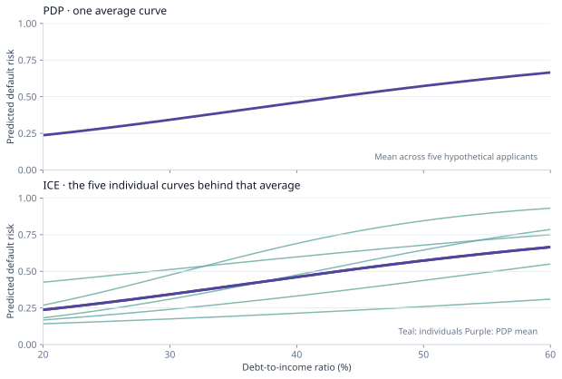
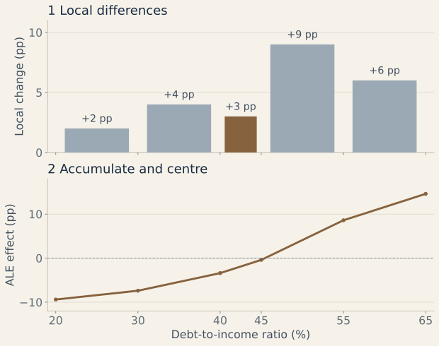

Explainable Artificial Intelligence (XAI)
A guide to explaining what a trained model predicts: which inputs matter for one case, how predictions vary across cases, and what changes might alter a decision.
What does an explanation answer?
Intrinsic interpretability means the fitted model itself is understandable, as with a small decision tree or a sparse linear model. Post-hoc explainability studies a model after training, often by probing its outputs. A local explanation concerns one prediction; a global explanation summarizes behavior over many observations.
These are explanations of model behavior. They do not, on their own, show that an input causes an outcome, that a decision is fair, or that the model predicts well on new data. Check predictive performance first; then choose an explanation method for the question and audience. In high-stakes settings, an inherently interpretable model is also worth testing against a black box before relying on a post-hoc account.
- Local: Why did this applicant receive this model score?
- Global: How does the model's score tend to vary as debt burden changes?
- Alternative decision: Which feasible changes would cross the model's decision threshold?
Explaining one decision
Suppose a toy model predicts approval with probability 45%, below its 50% decision threshold. LIME, SHAP, and a counterfactual answer different questions about this one application. The numbers below are constructed examples, not output from a fitted credit model.
LIME · imitate the model nearby
LIME stands for Local Interpretable Model-agnostic Explanations. It makes many slight variations of this application, asks the original model to score them, and fits a simple surrogate model to those scores. Variations closer to the applicant receive more weight. If the surrogate gives debt burden a large negative coefficient, that describes the model's behavior near this applicant; it is not a rule for every applicant. The surrogate should reproduce the original model's nearby predictions, and its result depends on how realistic the generated variations are.
SHAP · divide the difference from a reference
SHAP stands for SHapley Additive exPlanations. It starts with a reference prediction and allocates the difference between that and this prediction among the features. It averages each feature's added contribution over different groups of other features. The contributions add up on the chosen output scale. For this illustration, that scale is approval log-odds:
| Part of the explanation | Contribution to approval log-odds |
|---|---|
| Reference score $\phi_0$ | 0.00 |
| Income | +0.60 |
| Employment history | +0.40 |
| Debt burden | −0.70 |
| Missed payment | −0.50 |
| Final model score | −0.20 |
Income and employment push the score above the reference; debt burden and a missed payment pull it down. The final log-odds of −0.20 convert to an approval probability of about 45%. These are illustrative contributions, not SHAP values computed from a real model. The reference data and treatment of related features affect actual SHAP values; a contribution is not a causal effect.
Counterfactual · find a feasible alternative
A counterfactual asks which small, plausible changes to this application would move the model's approval probability from 45% to at least 50%. It searches for an alternative $x'$ that crosses the threshold while staying close to the original $x$:
The result might say “a lower debt burden would change this model's decision.” The search must exclude immutable traits and implausible combinations of inputs. It describes the model's boundary, not a guaranteed route to approval or proof that lowering debt alone would cause approval.
How a feature changes model predictions
Consider the model's predicted default risk as debt-to-income ratio changes. A partial dependence plot (PDP) and individual conditional expectation (ICE) curves use the same prediction sweep but summarize it differently. Accumulated local effects (ALE) instead uses short changes near observed applicants.
PDP · average over applicants
Set the debt ratio to 40% for every applicant, leaving their other recorded features as they are. Average the model's resulting risk predictions; then repeat at 20%, 30%, and other ratios. The purple PDP curve shows that average at each ratio, even if no real applicant has exactly that combination of inputs.
ICE · keep each applicant's curve
ICE performs the same sweep but draws a separate curve for each applicant instead of averaging immediately. In the plot, five teal lines reveal that risk rises much faster for some applicants than for others. The purple PDP is their pointwise average, so it can hide those differences.

PDP and ICE may create unrealistic applications when related inputs are changed independently. For example, fixing debt ratio across its full range while holding income and other debt measures constant may produce combinations absent from the data.
ALE · accumulate local changes
ALE means Accumulated Local Effects. First, divide debt ratio into short intervals. In the 40–45% interval, use only applicants whose observed ratio falls there. For each one, score the same applicant twice: once at 40% and once at 45%, with other inputs unchanged. Average the differences. If the mean change in predicted default risk is +3 percentage points, that is this interval's local effect.
Repeat in each interval, then add the local effects from left to right. Finally, shift the whole curve vertically so its average effect is zero. Thus an ALE value is a change relative to the average prediction effect, not an applicant's predicted risk. Unlike PDP, the model is only probed near combinations represented in the data; intervals with few applicants still need caution.

ALE describes how this model behaves where data were observed. It does not show that changing debt ratio would cause the same change in real-world default risk.
Neural networks and robustness
Integrated gradients (IG) · trace a path from a baseline
For a differentiable neural network, start with a chosen baseline $x'$ and move toward the actual input $x$ in small steps. At each step, measure how sensitive the model's score is to each feature, then add those sensitivities along the path. The resulting attributions divide the score difference between input and baseline:
For an image classifier, move from a blank image to a handwritten “8”; pixels in the digit's strokes may receive strong attribution for the “8” score. A blank image can be a useful baseline for some images, but a zero-valued credit record may be meaningless. The baseline and intermediate inputs need scrutiny.
Adversarial examples · test a fragile boundary
An adversarial example is an input deliberately changed to make the model err. Imagine changing a few stop-sign pixels so subtly that a person still sees a stop sign, while a classifier predicts another sign. The perturbation exposes a fragile decision boundary. It tests robustness; unlike a feasible credit counterfactual, it is not advice for changing a real-world decision, and the attack alone does not explain the model's reasoning.
- State whether it is local or global, and whether it explains a score, probability, or class decision.
- Test whether a surrogate reproduces the original model nearby and whether results are stable under reasonable choices.
- Check the reference data, baseline, correlated inputs, and feasibility of suggested changes.
- Keep predictive performance and fairness audits separate from explanation quality.